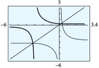

We encounter composite functions in the real world every day. As an example, suppose you and some friends are driving from Lincoln, NE to Omaha, NE. Once you arrive in Omaha you drive around the city to see all the beautiful sites. We know that Omaha is 60 miles away from Lincoln, and for each hour spent in Omaha, you drive an additional 5 miles. Then the function
\begin{equation*}
m(x)=60+5x
\end{equation*}
represents the miles traveled if you and your friends spend \(x\) hours in Omaha.
Now, suppose gas for your vehical costs $0.15 per mile. We can represent this knowledge with the function
\begin{equation*}
c(m)=.15m
\end{equation*}
where \(m\) is in miles. If we want to know how much you and your friends will spend on gas during your trip if you spend \(x\) hours in Omaha, we can now use these two functions we created. If you spend \(x\) hours in Omaha, you will have traveled \(60+5x\) miles. The cost of gas is \(.15m\) where \(m\) is miles. Then we need only replace \(m\) by \(60+5x\) to get
\begin{equation*}
.15(60+5x)
\end{equation*}
as the cost of gas if you spend \(x\) hours in Omaha.
Here we are evaluating the function \(c(m)\) at the value \(f(x)\) since \(f(x)\) is the number of miles traveled. The function \(c(f(x))\) is called a composite function, or a composition of functions.
Example144
Given the functions \(f(x)=x^2-2x \) and \(g(x)=.5 x\text{,}\) identify the function \(f(g(x))\) and find the value of \(f(g(1))\text{.}\)
First, let's find the function \(f(g(x))\text{.}\) To identify this function, we are pluggin in \(.5x\) for \(x\) in the function \(f(x)=x^2-2x\text{.}\) We get the function
Notice that this composition of functions, \(c(m(x))\text{,}\) has time in hours as its input and cost as its output.
In general, given two functions \(f(x)\) and \(g(x)\text{,}\) the composition \(f(g(x))\) has the same input as \(g \text{,}\) but has the same output as \(f \text{.}\)
SubsectionInverse Functions
When you buy a house, your monthly mortgage payment is a function of the size of the loan. Table 145 shows mortgage payments on \(30\)-year loans of various sizes at \(6\)% interest.
Loan amount, \(L\)
\(150,000\)
\(175,000\)
\(200,000\)
\(225,000\)
\(250,000\)
Mortgage payment, \(M\)
\(899.33\)
\(1049.21\)
\(1199.10\)
\(1348.99\)
\(1498.88\)
Table145
For the function \(M = f (L)\text{,}\) the input value is the amount of the loan, and the output is the mortgage payment.
However, when you are shopping for a house, you may think of the mortgage payment as the input variable: If you can afford a certain monthly mortgage payment, how large a loan can you finance? Now the mortgage payment is the input value, and the loan amount is the output. By interchanging the inputs and outputs, we define a new function, \(L = g(M)\text{,}\) shown in Table 146.
Mortgage payment, \(M\)
\(899.33\)
\(1049.21\)
\(1199.10\)
\(1348.99\)
\(1498.88\)
Loan amount, \(L\)
\(150,000\)
\(175,000\)
\(200,000\)
\(225,000\)
\(250,000\)
Table146
This new function gives the same information as the original function, \(f\text{,}\) but from a different point of view. We call the function \(g\) the inverse function for \(f\text{.}\) The elements of the range of \(f\) are used as the input values for \(g\text{,}\) and the output values of \(g\) are the corresponding domain elements of \(f\text{.}\) For example, from the tables you can verify that \(f (200,000) = 1199.10\text{,}\) and \(g(1199.10) = 200,000\text{.}\) In fact, this property defines the inverse function.
Inverse Functions
Suppose \(g\) is the inverse function for \(f\text{.}\) Then
\begin{equation*}
g(b) = a \text{ if and only if }f(a) = b.
\end{equation*}
Example147
Suppose \(g\) is the inverse function for \(f\text{,}\) and we know the following function values for \(f\text{:}\)
\begin{equation*}
f (-3) = 5, ~~ f (2) = 1, ~~ f (5) = 0.
\end{equation*}
We know that \(g(5) = -3\) because \(f (-3) = 5\text{,}\) and \(g(0) = 5\) because \(f (5) = 0\text{.}\) Tables may be helpful in visualizing the two functions, as shown below.
\(y=f(x)\)
\(x\)
\(y\)
\(-3\)
\(5\)
\(2\)
\(1\)
\(5\)
\(0\)
→ Interchange the columns →
\(x=g(y)\)
\(y\)
\(x\)
\(5\)
\(-3\)
\(1\)
\(2\)
\(0\)
\(5\)
For the function \(f\text{,}\) the input variable is \(x\) and the output variable is \(y\text{.}\) For the inverse function \(g\text{,}\) the roles of the variables are interchanged: \(y\) is now the input and \(x\) is the output.
Suppose \(g\) is the inverse function for \(f\text{,}\) and suppose we know the following function values for f :
\begin{equation*}
f (-1) = 0,~~ f (0) = 1, ~~ f (1) = 2.
\end{equation*}
Find \(g(0)\) and \(g(1)\text{.}\)
SubsectionFinding a Formula for the Inverse Function
If a function is given by a table of values, we can interchange the columns (or rows) of the table to obtain the inverse function. Swapping the columns works because we are really interchanging the input and output variables. If a function is defined by an equation, we can find a formula for its inverse function in the same way: Interchange the roles of the variables in the equation so that the old output variable becomes the new input variable.
Example149
The function \(H = f (t) = 6 + 2t\) gives the height of corn seedlings, in inches, \(t\) days after they are planted. Find a formula for the inverse function and explain its meaning in this context.
Make a table of values for \(f (t)\) and a table for its inverse function.
In this equation, \(t\) is the input and \(H\) is the output. We interchange the roles of the variables by solving for \(t\) to obtain
\begin{equation*}
t = \frac{H - 6}{2}.
\end{equation*}
In this equation, \(H\) is the input and \(t\) is the output. The formula for the inverse function is \(t=g(H) = \dfrac{H - 6}{2}\text{.}\) The function \(g\) gives the number of days it will take the corn seedlings to grow to a height of \(H\) inches.
To make a table for \(f\text{,}\) we choose values for \(t\) and evaluate \(f (t) = 6 + 2t\) at those \(t\)-values, as shown in Table 150.
\(H=f(t)\)
\(t\)
\(H\)
\(0\)
\(6\)
\(1\)
\(8\)
\(2\)
\(10\)
\(3\)
\(12\)
\(t=g(H)\)
\(H\)
\(t\)
\(6\)
\(0\)
\(8\)
\(1\)
\(10\)
\(2\)
\(12\)
\(3\)
Table150Table151
To make a table for \(g\text{,}\) we could choose values for \(H\) and evaluate \(\dfrac{H-6}{2}\text{,}\) but because \(g\) is the inverse function for \(f\text{,}\) we can simply interchange the columns in our table for \(f\text{,}\) as shown in Table 151.
You can check that the values in the second table do satisfy the formula for the inverse function, \(g(H)\text{.}\) Note once again that the two tables show the same relationship between \(t\) and \(H\text{,}\) but the roles of input and output have been interchanged. The function \(f\) tells us the height of the seedlings after \(t\) days, and \(g\) tells us how long it will take the seedlings to grow to height \(H\text{.}\)
Carol can burn \(600\) calories per hour bicycling and \(400\) calories per hour swimming. She would like to lose \(5\) pounds, which is equivalent to \(16,000\) calories.
Write an equation relating the number of hours of cycling, \(x\text{,}\) and the number of hours swimming, \(y\text{,}\) that Carol must spend to lose \(5\) pounds.
Write \(y\) as a function of \(x\text{,}\) \(y = f (x)\text{.}\) What does \(f (10)\) tell you?
Find the inverse function, \(x = g(y)\text{.}\) What does \(g(10)\) tell you?
SubsectionInverse Function Notation
If the inverse of a function \(f\) is also a function, we denote the inverse by the symbol \(f^{-1}\text{,}\) read "\(f\) inverse." This notation makes it clear that the two functions are related in a special way. For example, the function \(f (t) = 6 + 2t\) in Example 149 has inverse function \(f^{-1}(H) = \dfrac{H -6}{2}\text{.}\)
Example153
If \(y = f (x) = x^3 + 2\text{,}\) find \(f^{-1}(10)\text{.}\)
We first find the inverse function for \(y = x^3 + 2\) by solving for \(x\text{:}\) \begin{align*} x^3 \amp = y - 2 \amp\amp\text{Substract 2 from both sides.} \\ x \amp = \sqrt[3]{y - 2}\amp\amp\text{Take cube roots.} \end{align*} The inverse function is \(x = f^{-1}(y) = \sqrt[3]{y - 2}\text{.}\) Now we evaluate the inverse function at \(y = 10\text{:}\)
Although the same symbol, \(^{-1}\text{,}\) is used for both reciprocals and inverse functions, the two notions are not equivalent. That is, the inverse of a given function is usually not the same as the reciprocal of that function. In Example 149, note that \(f^{-1}(y)\) is not the same as the reciprocal of \(f (y)\text{,}\) because
are equivalent; they convey the same information. This fact is a restatement of our earlier observation about inverse functions, this time using inverse function notation.
Inverse Functions
Suppose the inverse of \(f\) is a function, denoted by \(f^{-1}\text{.}\) Then
\begin{equation*}
f^{-1}(y) = x \text{ if and only if }f(x) = y.
\end{equation*}
If \(z = f (w) = \dfrac{1}{w + 3}\text{,}\) find \(f^{-1}(1)\text{.}\)
Write two equations about the value of \(f^{-1}(1)\text{,}\) one using \(f^{-1}\) and one using \(f\text{.}\)
Show that \(f^{-1}(1)\) is not equal to \(\dfrac{1}{f(1)}\text{.}\)
We can use a graph of a function \(y = f (x)\) to find values of the inverse function \(x = f^{-1}(y)\text{.}\) Figure 157 shows the graph of \(f(x) = x^3 + 2\text{.}\) You already know how to evaluate a function from its graph: We start with the horizontal axis. For instance, to evaluate \(f(-2)\text{,}\) we find \(-2\) on the \(x\)-axis, move vertically to the point on the graph with \(x = -2\text{,}\) in this case \((-2, -6)\text{,}\) and read the \(y\)-coordinate of the point. We see that \(f(-2) = -6\text{.}\)
To evaluate the inverse function, we start with the vertical axis. For example, to find \(f^{-1}(10)\text{,}\) we find \(10\) on the vertical axis and move horizontally to the point on the graph with \(y = 10\text{.}\) In this case, the point is \((2, 10)\text{,}\) so \(f^{-1}(10) = 2\text{.}\)
Figure157
Example158
The function \(C = h(F)\) gives Celsius temperature as a function of Fahrenheit temperature. The graph of the function is shown in Figure 159. Use the graph to evaluate \(h(68)\) and \(h^{-1}(10)\text{,}\) and then explain their meaning in this context.
To evaluate \(h(68)\text{,}\) we find the input \(F = 68\) on the horizontal axis, then find the point on the graph with \(F = 68\) and read its vertical coordinate. We see that the point \((68, 20)\) lies on the graph, so \(h(68) = 20\text{.}\) When the Fahrenheit temperature is \(68\degree\text{,}\) the Celsius temperature is \(20\degree\text{.}\)
The inverse function reverses the roles of input and output. Because \(C = h(F)\text{,}\) \(F = h^{-1}(C)\text{,}\) so the inverse function gives us the Fahrenheit temperature if we know the Celsius temperature. In particular, \(h^{-1}(10)\) is the Fahrenheit temperature when the Celsius temperature is \(10\degree\text{.}\)
To use the graph of \(h\) to find values of \(h^{-1}\text{,}\) we start with the vertical axis and find the point on the graph with \(C = 10\text{.}\) This point is \((50, 10)\text{,}\) so \(F = 50\) when \(C = 10\text{,}\) or \(h^{-1}(10) = 50\text{.}\) When the Celsius temperature is \(10\degree\text{,}\) the Fahrenheit temperature is \(50\degree\text{.}\)
Use the graph of \(h\) in Figure 159 to find \(h^{-1}(-10)\text{.}\)
Does \(h^{-1}(-10) = -h^{-1}(10)\text{?}\)
Write two equations, one using \(h\) and one using \(h^{-1}\text{,}\) stating the Fahrenheit temperature when the Celsius temperature is \(0\degree\text{.}\)
SubsectionDomain and Range
When we interchange the input and output variables to obtain the inverse function, we interchange the domain and range of the function. For the functions graphed in Example 203, you can see that \begin{align*} \text{Domain} (f) \amp=[-4, 12] \amp\text{and}\amp\amp \text{Domain} ( f^{-1}) \amp= [0, 8]\\ \text{Range} ( f ) \amp = [0, 8] \amp\amp\amp \text{Range} ( f -1) \amp = [-4, 12]. \end{align*} This relationship between the domain and range of a function and its inverse holds in general.
Domain and Range of the Inverse Function
Suppose \(f^{-1}\) is the inverse function for \(f\text{.}\) Then
\begin{equation*}
f^{-1}\left(f(x)\right) = x\text{ and }f\left(f^{-1}( y)\right) = y
\end{equation*}
as long as \(x\) is in the domain of \(f\text{,}\) and \(y\) is in the domain of \(f^{-1}\text{.}\)
Example161
Graph the function \(y = f (x) = \dfrac{1}{x +3}\) in the window \begin{align} \text{Xmin} \amp = -6 \amp\amp \text{Xmax} = 3.4\\ \text{Ymin} \amp = -6 \amp\amp \text{Ymax} = 3 \end{align}.
Graph the inverse function in the same window, along with the line \(y = x\text{.}\)
State the domain and range of \(f\text{,}\) and of \(f^{-1}\text{.}\)
The graph of \(f\) is shown in Figure 162. It looks like the graph of \(y = \dfrac{1}{x}\text{,}\) shifted \(3\) units to the left.
Figure162
To find the inverse function, we solve for \(x\text{.}\) Take the reciprocal of both sides of the equation. \begin{align*} \dfrac{1}{y} \amp= x + 3\amp\amp\text{Subtract 3 from both sides.}\\ x \amp = \dfrac{1}{y}- 3 \end{align*} The inverse function is \(x = f^{-1}(y) = \dfrac{1}{y}- 3\text{,}\) or, using \(x\) for the input variable, \(f^{-1}(x) = \dfrac{1}{x}- 3\text{.}\) The graph of \(f^{-1}\) looks like the graph of \(y = \dfrac{1}{x}\text{,}\) shifted down \(3\) units, as shown in Figure 162.
Because \(f\) is undefined at \(x = -3\text{,}\) the domain of \(f\) is all real numbers except \(-3\text{.}\) The graph has a horizontal asymptote at \(y = 0\text{,}\) so the range is all real numbers except \(0\text{.}\)
The inverse function \(f^{-1}(x) = \dfrac{1}{x}- 3\) is undefined at \(x = 0\text{,}\) so its domain is all real numbers except \(0\text{.}\) The graph of \(f^{-1}\) has a horizontal asymptote at \(y = -3\text{,}\) so its range is all real numbers except \(-3\text{.}\)